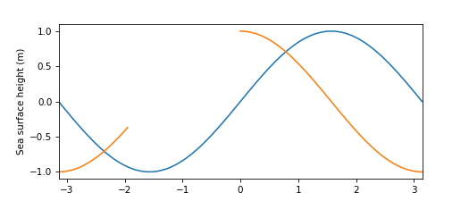

<!DOCTYPE html>
<head>    
    <meta http-equiv="content-type" content="text/html; charset=UTF-8" />
    <script>L_PREFER_CANVAS=false; L_NO_TOUCH=false; L_DISABLE_3D=false;</script>
    <script src="https://cdn.jsdelivr.net/npm/leaflet@1.4.0/dist/leaflet.js"></script>
    <script src="https://ajax.googleapis.com/ajax/libs/jquery/1.11.1/jquery.min.js"></script>
    <script src="https://maxcdn.bootstrapcdn.com/bootstrap/3.2.0/js/bootstrap.min.js"></script>
    <script src="https://cdnjs.cloudflare.com/ajax/libs/Leaflet.awesome-markers/2.0.2/leaflet.awesome-markers.js"></script>
    <link rel="stylesheet" href="https://cdn.jsdelivr.net/npm/leaflet@1.4.0/dist/leaflet.css"/>
    <link rel="stylesheet" href="https://maxcdn.bootstrapcdn.com/bootstrap/3.2.0/css/bootstrap.min.css"/>
    <link rel="stylesheet" href="https://maxcdn.bootstrapcdn.com/bootstrap/3.2.0/css/bootstrap-theme.min.css"/>
    <link rel="stylesheet" href="https://maxcdn.bootstrapcdn.com/font-awesome/4.6.3/css/font-awesome.min.css"/>
    <link rel="stylesheet" href="https://cdnjs.cloudflare.com/ajax/libs/Leaflet.awesome-markers/2.0.2/leaflet.awesome-markers.css"/>
    <link rel="stylesheet" href="https://rawcdn.githack.com/python-visualization/folium/master/folium/templates/leaflet.awesome.rotate.css"/>
    <style>html, body {width: 100%;height: 100%;margin: 0;padding: 0;}</style>
    <style>#map {position:absolute;top:0;bottom:0;right:0;left:0;}</style>
    
    <meta name="viewport" content="width=device-width,
        initial-scale=1.0, maximum-scale=1.0, user-scalable=no" />
    <style>#map_67b82ff63528427a80e9bd165156dbbd {
        position: relative;
        width: 100.0%;
        height: 100.0%;
        left: 0.0%;
        top: 0.0%;
        }
    </style>
</head>
<body>    
    
    <div class="folium-map" id="map_67b82ff63528427a80e9bd165156dbbd" ></div>
</body>
<script>    
    
    
        var bounds = null;
    

    var map_67b82ff63528427a80e9bd165156dbbd = L.map(
        'map_67b82ff63528427a80e9bd165156dbbd', {
        center: [43, -100],
        zoom: 4,
        maxBounds: bounds,
        layers: [],
        worldCopyJump: false,
        crs: L.CRS.EPSG3857,
        zoomControl: true,
        });


    
    var tile_layer_2354190cf41143ebb73e32b0dfe321ef = L.tileLayer(
        'https://{s}.tile.openstreetmap.org/{z}/{x}/{y}.png',
        {
        "attribution": null,
        "detectRetina": false,
        "maxNativeZoom": 18,
        "maxZoom": 18,
        "minZoom": 0,
        "noWrap": false,
        "opacity": 1,
        "subdomains": "abc",
        "tms": false
}).addTo(map_67b82ff63528427a80e9bd165156dbbd);
    
        var marker_4d7384b472f545488939601efc39c6b3 = L.marker(
            [30, -100],
            {
                icon: new L.Icon.Default(),
                }
            ).addTo(map_67b82ff63528427a80e9bd165156dbbd);
        
    
            var popup_d411d3d00d7541c3b5cf051f3171d5fb = L.popup({maxWidth: '2650'
            
            });

            
                var html_c23c8d04947248e3acfd8f19cd0b1bb1 = $(`<div id="html_c23c8d04947248e3acfd8f19cd0b1bb1" style="width: 100.0%; height: 100.0%;">     <h1> This is a big popup</h1><br>     With a few lines of code...          <p>     <code>         from numpy import *<br>         exp(-2*pi)     </code>     </p>     </div>`)[0];
                popup_d411d3d00d7541c3b5cf051f3171d5fb.setContent(html_c23c8d04947248e3acfd8f19cd0b1bb1);
            

            marker_4d7384b472f545488939601efc39c6b3.bindPopup(popup_d411d3d00d7541c3b5cf051f3171d5fb)
            ;

            
        
</script>